Б. Владимир
Unreal Engine C++ Developer
Обо мне
Разрабатываю игровые системы на Unreal Engine с использованием C++ и Blueprint. Опыт включает проектирование архитектуры геймплейных систем, реализацию механик через Gameplay Ability System, работу с сетевой репликацией, динамической загрузкой ресурсов и интеграцией HTTP API.
Работал как над самостоятельными проектами, так и над командной разработкой. Занимался реализацией функциональности с нуля, поддержкой существующего кода, рефакторингом и оптимизацией.
В портфолио представлены проекты с исходным кодом и демонстрациями реализованных систем.
Мои навыки
Основная разработка
Архитектура геймплея
Сетевое взаимодействие
Доп. технологии
Инструменты
Мои проекты
Traversal
Базовая cистема паркура. Реализована в C++ через Gameplay Ability System (GAS). Без использования Blueprint.
Ключевой функционал:
- Проект на 99% написан в С++. Blueprint использовался для балансировки переменных.
- GAS с тремя Ability: WallJump(прыжки от стены во время бега по стене и обычные),WallRun(вертикальный\горизонтальный бег по стене),Parkour(преодоление мелких и крабканье на крупные препядствия).
- Политика активации - InstancedPerActor(один активный Ability На владельца) - не дает "спамить" Ability во время выполнения, т.к. добавляет проверку по тегу(система cool down)
- В персонаже происходят поверхностные проверки активации и отмены. Когда Ability активируется -> запускается AbilityTask, которая отслеживает дальность перемещения\наличия стен. AbilityTask завершается а через делегаты завершается абилити Ability.
- Самостоятельно решены задачи опредления препядствий. Остальное решено при помощи механизмов UE.
- Клавиша "активного" перемещения (Assasins Creed reference) - правая кнопка мыши.
- Для анимаций паркура использовался бесплатный ассет. Для бега по стене использовалась анимация обычного бега но с изменнием угла для кости pelvis.
Управление: перемещение - WASD; cпринт - Shift; прыжок - Space; быстрая стойка - RMB; перепрыгнуть\залезть - F.
Статус:«закончен»
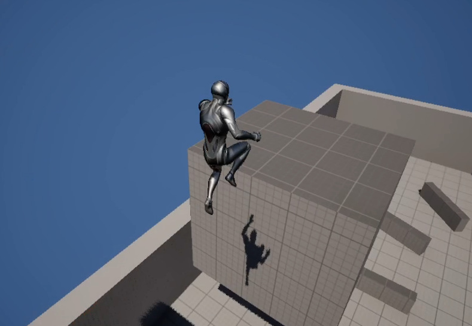
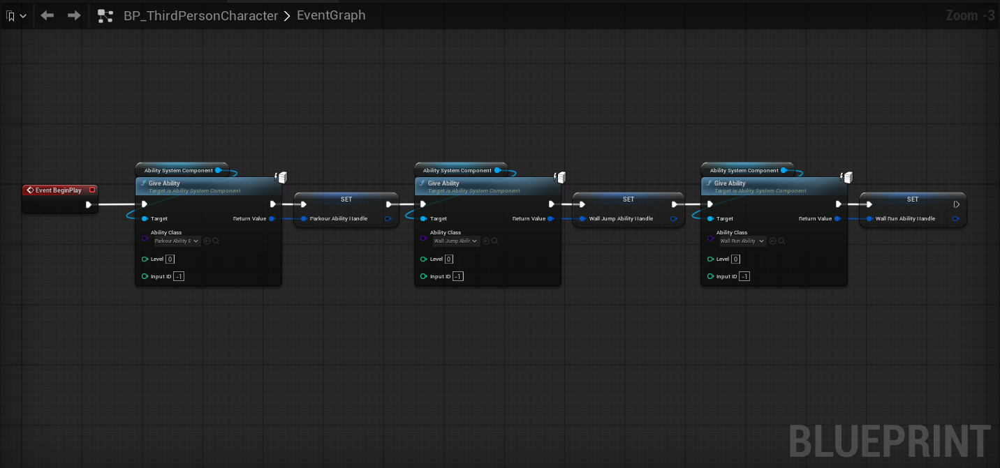
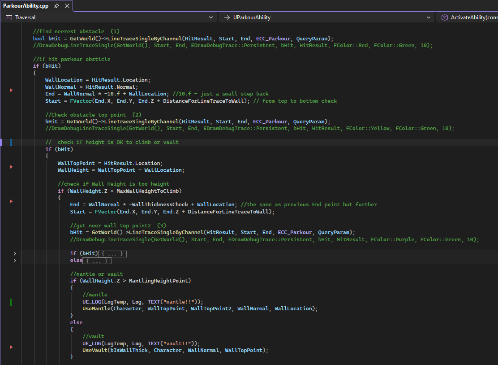
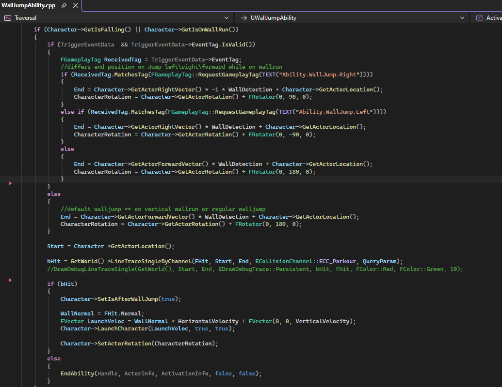
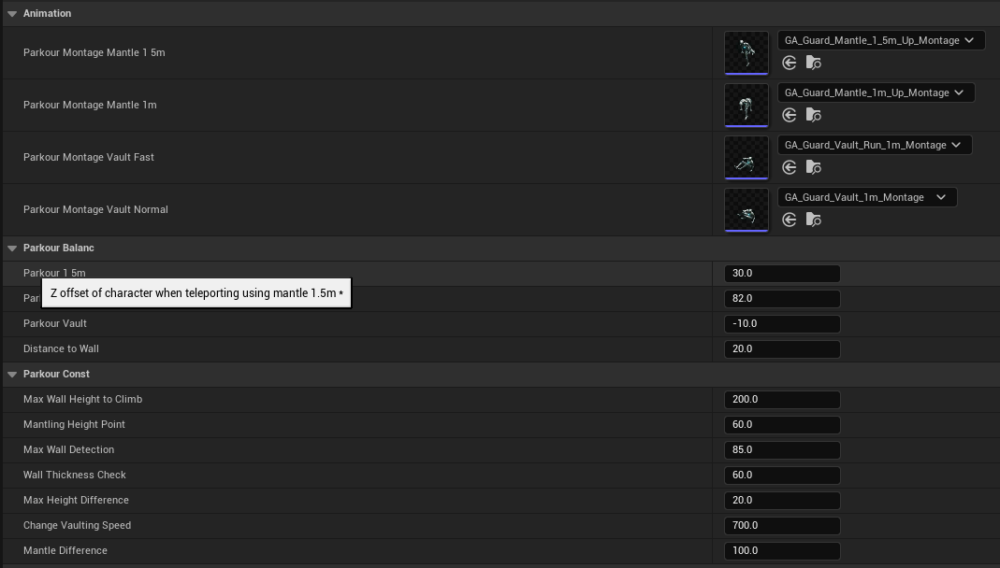
Vampire Survivors-like
Командный проект в жанре Vampire Survivors-like для Android. Отвечал за основную часть игровой логики, связанной с боевой системой, способностями персонажа, характеристиками, предметами и поведением врагов, а также за оптимизацию производительности игры и рабочего процесса в редакторе Unreal Engine.
Ключевой функционал:
- Реализовал все обычные и ультимативные способности персонажа и предметов.
- Разработал собственную систему locomotion и анимации спрайтов, существовавшую до появления Paper2D.
- Разработал весовую логику выпадения опыта(ARPG-like)
- Разработал систему нанесения урона и обработки боевых взаимодействий.
- Реализовал статистику боя и подсчёт нанесённого урона.
- Разработал систему теней которая синхронизируется с locomotion
- Увеличил FPS(с45 до 60+) через оптимизацию спавна, коллизий и рендера. Уменьшил максимальный размер установочного файла. Увеличил производительность в редакторе UE через рефакторинг кода и Blueprints.
- Проблема: при использовании магнита большое количество выпавшего опыта одновременно начинало перемещаться к персонажу. Это вызывало резкую просадку FPS.
Решение: изменил логику притягивания опыта: распределил объекты по оси Z и добавил случайную задержку от 0 до 0,1 секунды перед началом притягивания каждого объекта. Это позволило практически полностью устранить просадку FPS даже при большом количестве опыта. - Проблема: накопление декалей и объектов опыта приводило к увеличению Overdraw и постепенному снижению FPS.
Решение: перенёс отображение опыта и декалей на Instanced Static Mesh Component, сократив накладные расходы на отображение множества объектов. Дополнительно распределил объекты по оси Z и реализовал удаление избыточно накопившихся декалей, поскольку стандартное управление временем жизни декалей не подходило для этой задачи. - Не занимался реализацией спавна врагов и таблиц спавна, пользовательского интерфейса, базовой инфраструктуры умений и характеристик, а также системы повышения уровня. При этом самостоятельно реализовал значительную часть игровой логики, использующей эти системы.
- Система способностей была построена на собственных механизмах, частично вдохновлённых подходами GAS, но не являлась реализацией Gameplay Ability System.
Моя зона ответственности:
Проблемы и решения:
Границы ответственности:
Статус:«закончен»
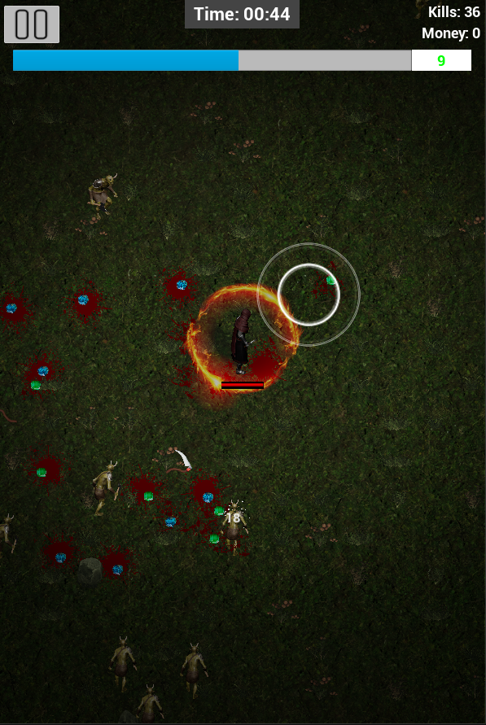
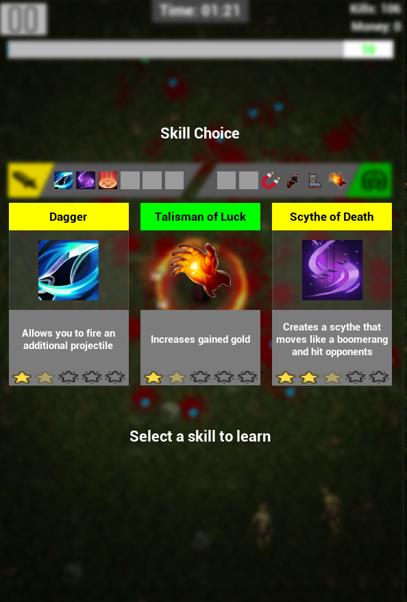
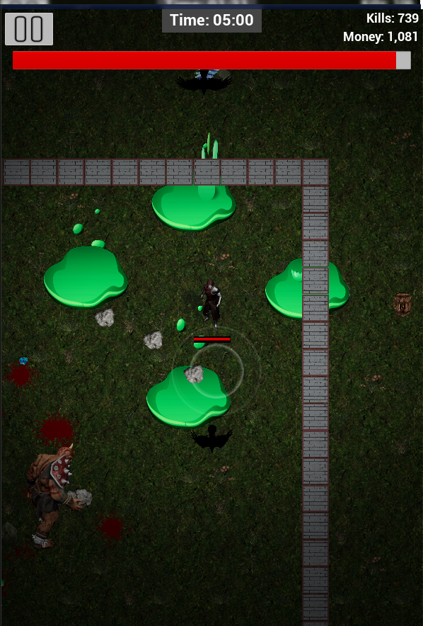
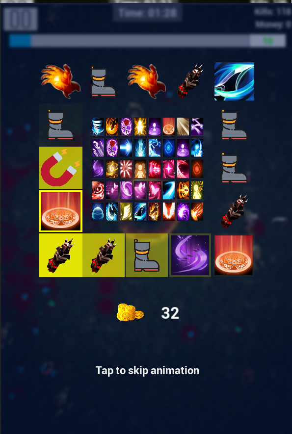
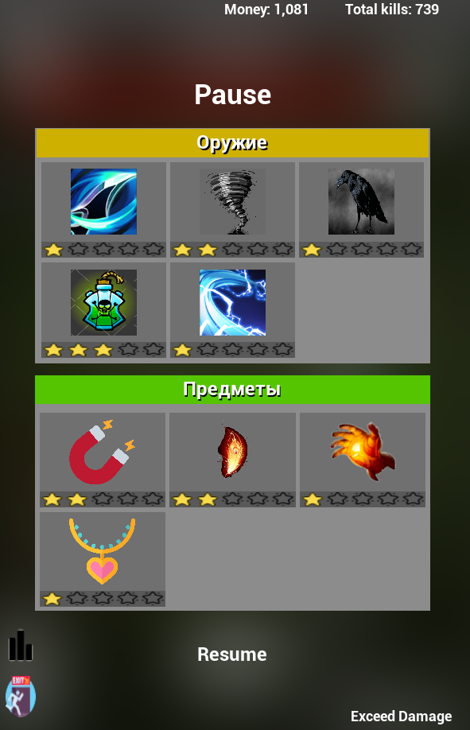
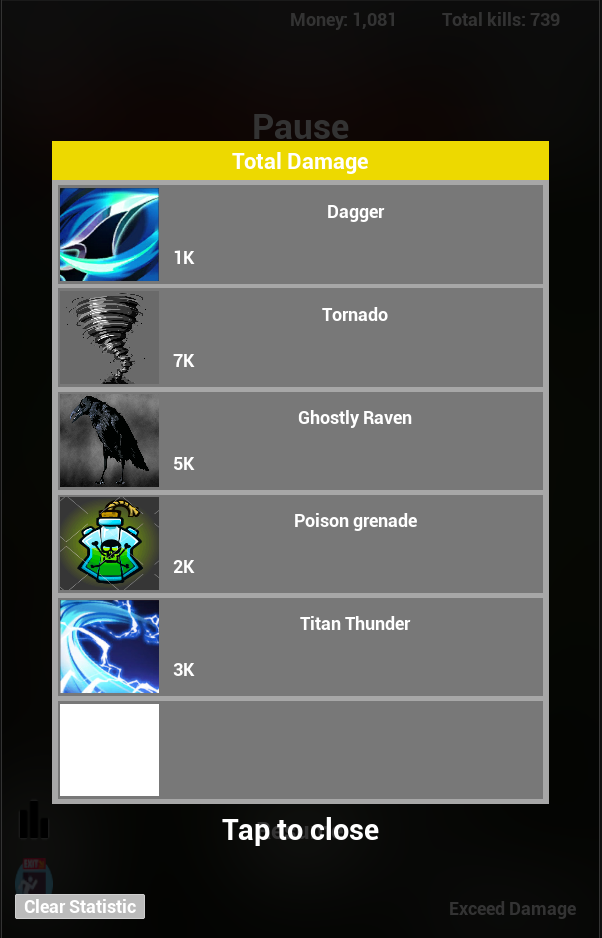
Проект был выполнен совместно с группой девелоперов, которые пожелали остаться неизвестными.
MintblomForest
Экспериментальный прототип RPG с модульными системами на Unreal Engine (командный проект)
Разработка велась в коллаборации с техническим художником(https://www.artstation.com/shiiine). Моя зона ответственности — полная реализация игровой логики, архитектура систем и их интеграция.
Ключевой функционал:
- Разработал переиспользуемую систему инвентаря(по аналогии с Skyrim) как подключаемый компонент. Взаимодействие с предметами организовано через интерфейс, позволяющий разным игровым объектам использовать общую логику работы с инвентарём.
- Гибкая система крафта: разделена на рецептурную (для экипировки) и комбинаторную (для зелий и еды). Вторая автоматически генерирует новые ID предметов, комбинируя свойства ингредиентов.
- Динамическая система идентификации предметов: префикс "Potion_" для зелий и "Food_" для еды - определяет логику расшифровки и применения эффектов.
- Проверка компонентов Nutrition (белки/жиры/углеводы/клетчатка) при создании блюд.
- Гибкая система атрибутов через GameplayTags — добавление любых свойств предметам без изменения кода.
- Система навыков и коллекций - кастомная, на основе Gameplay Ability System (GAS) и Gameplay Tags, что обеспечивает простоту и масштабируемость.
- Работа с сохранениями и поиск по DataTable вынесены в C++ для повышения производительности, остальная логика реализована в Blueprint для доработки проекта даже без С++ разработчика.
Система поддерживает проверку наличия необходимых предметов, проверку свободного места и добавление/забирание предметов в инвентарь. Она используется персонажем, сундуками, верстаком и алхимическим столом без необходимости создавать отдельную реализацию инвентаря для каждого типа объекта.
Статус:«закончен»
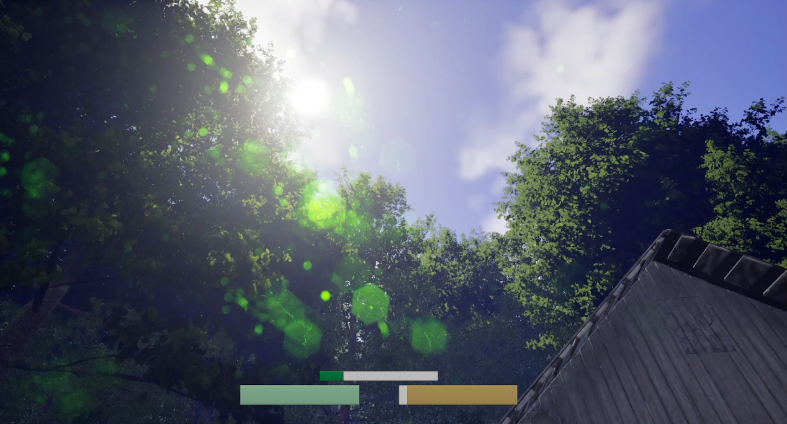
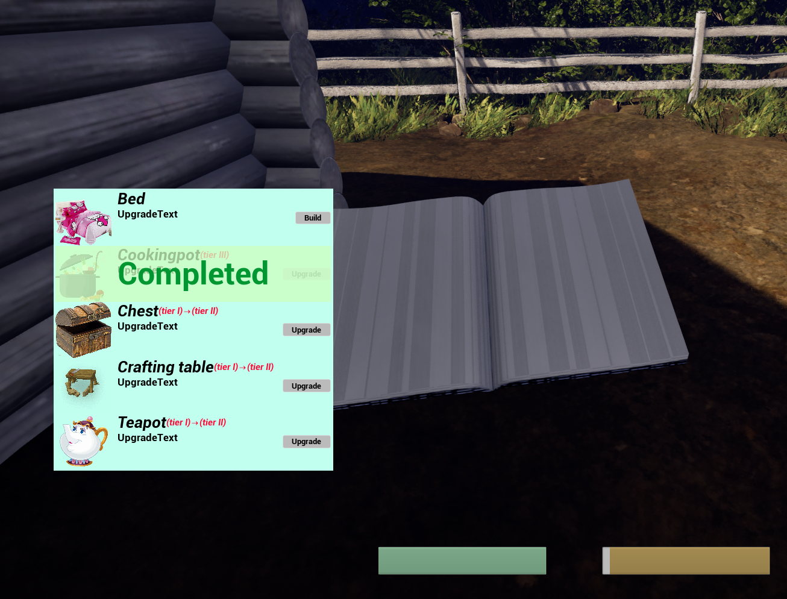
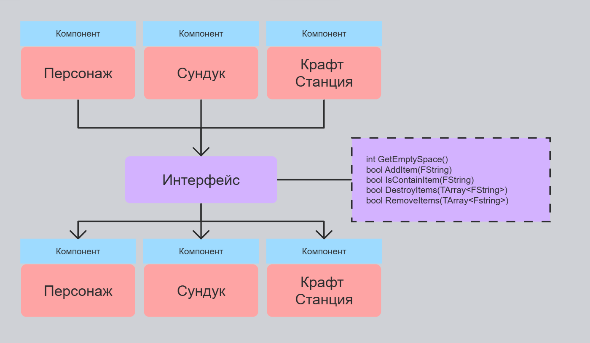
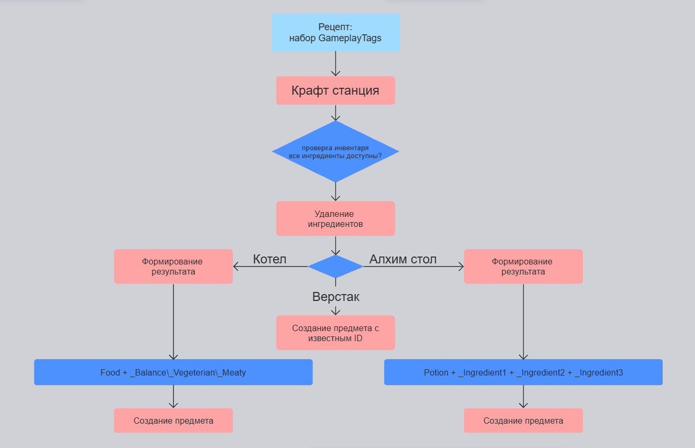
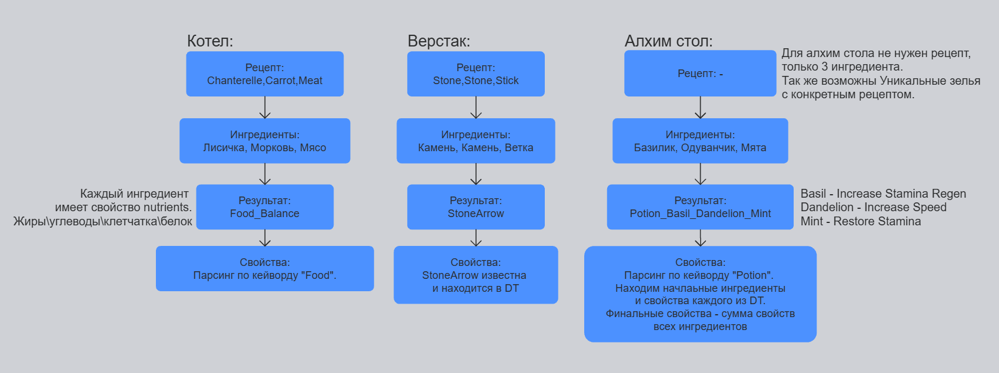
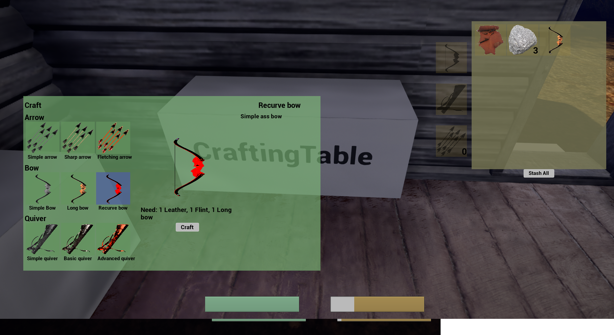
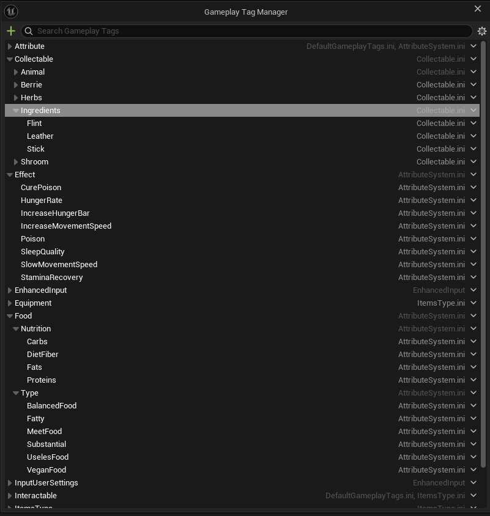
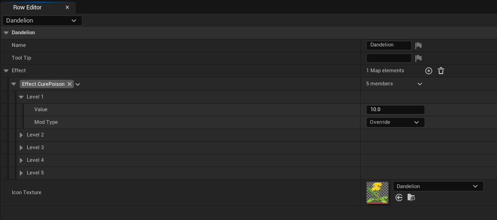
Небольшой, но технически насыщенный проект, демонстрирующий умение проектировать и реализовывать, как заимствованные, так и создавать новые сложные игровые системы с гибкой архитектурой.
- Подключить достижения в Steam после публикации
IsometricChess
Изометрические "шахматы" c большими изменениями в правилах. Исследовательский проект с Hotseat системой управления или vs UE Agent Learning AI.
Ключевой функционал:
- Многоэтапная пошаговая система со сменой ходов и гибкой архитектурой для добавления новых правил.
- Процедурная система изменения игрового поля.
- Интеграция нейросетевого AI с системой поощрения/наказания на основе качества ходов.
- Кастомный UMG Image класс с OnClick-событем для интерактивного взаимодействия.
- Архитектура, оптимизированная для легкой интеграции в мультиплеер.
- Расширяемая система классов (тайлы, фигуры) — новые юниты добавляются без изменения базового кода.
- C каждой победой AI будет все лучше и лучше играть. Но не так быстро как ожидалось.
- Agent получал данные в начале своего хода: Две Tmap фигур(белы и черные) и их расположения, текущее состояние победных очков, состояние 3 монолитов(нейтральный, союзный,вражеский) и зоны вокруг монолита.
- Agent в свой ход может сходить любой своей фигурой, на любую клетку если ход валидный - агента поощряем и завершаем ход, если не валидный - отменяем ход и наказываем, даем сходить еще n раз (В начале валидность ходов была очень низкой, через час обучения - агент практически всегда делал валидные ходы).
- Система наказаний и поощрений: за потерю фигуры - штраф равный убитой фигуре, шраф варьируется от силы фигуры. За захваченный монолит - поощряем, за потеряный или занятый противником - наказываем. За победу - очень сильно поощряем, за поражение - наказывем.
Система Agent Learning:
Правила игры: ход игрока состоит из двух частей: 1 - перемещение фигуры заданным паттерном, 2 - игрок меняет любой тайл в радиусе 2 клетов вокруг своих фигур. Вот некторые тайлы и их эфекты: скала - блокирует перемещение, вода - отнимает -1 к радиусу перемещения, трава - имунитет к изменению тайла. Так же на поле находятся 3 монолита. Для победы необходимо удерживать монолиты, которые приносят очки влияния.
Статус:«закончен»
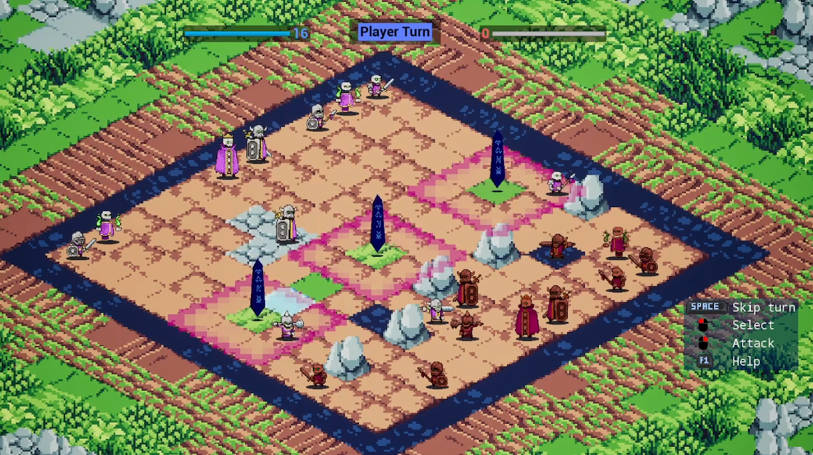
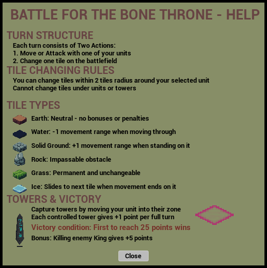
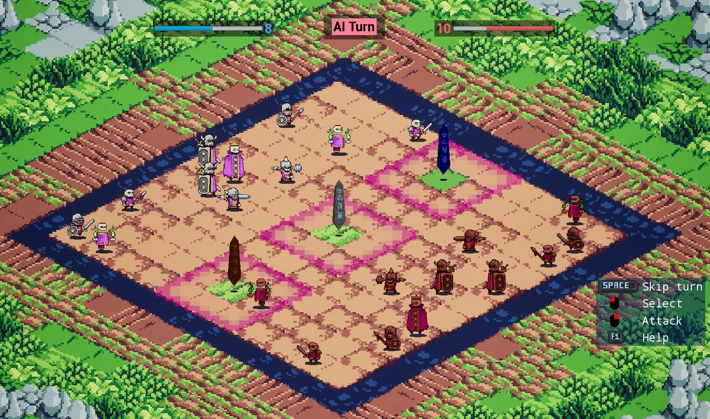
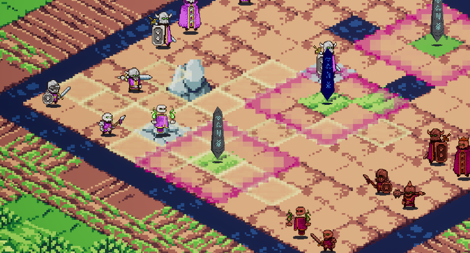
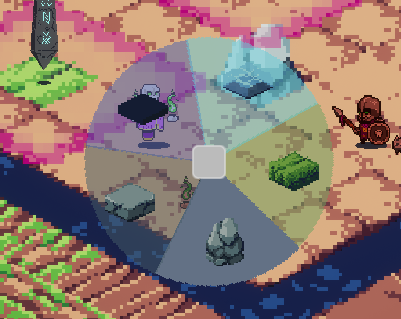
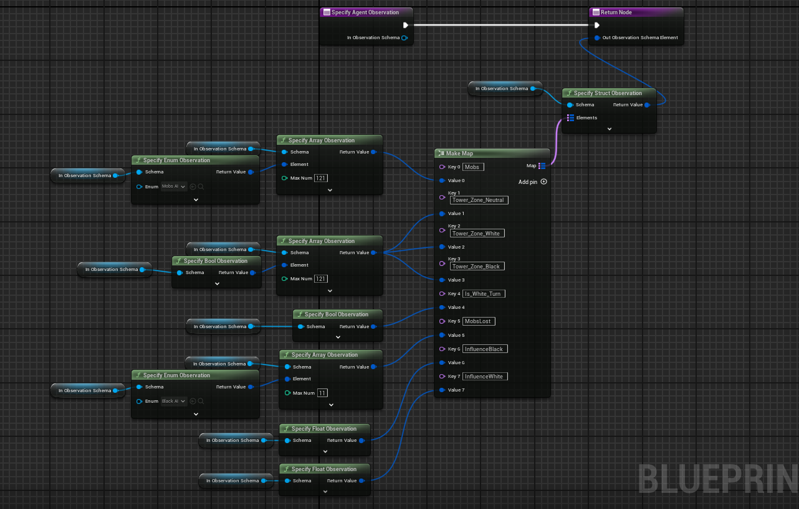
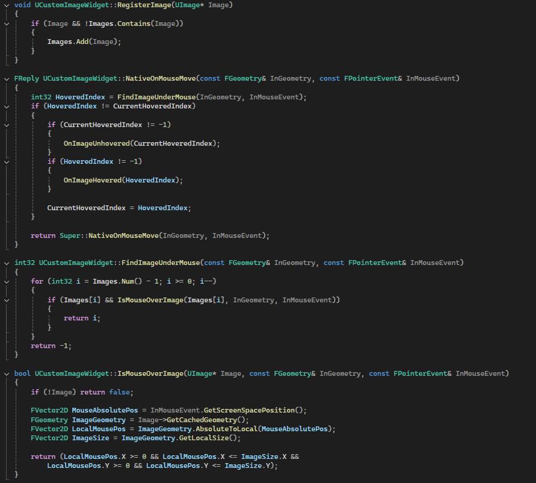
Заключение по проекту: Проект использовался для изучения Unreal Engine Learning Agents и проверки применимости обучения с подкреплением к пошаговой стратегии. Эксперимент позволил изучить интеграцию агента с игровой логикой и выявить ограничения выбранного подхода.
NPC_AI
Интеграция языковой модели с UE для симуляции отыгрыша NPC и выдаче квестов. Похожий функционал существует в игре Where winds meet.
Ключевой функционал:
- Самописный C++ HTTP клиент для коммуникации с AI моделью (без внешних библиотек)
- Парсинг JSON ответов и преобразование в игровые объекты
- Модульная архитектура для легкой замены модели
- Промпт для модели, от которого зависит пулл квестов
Статус:«завершен»
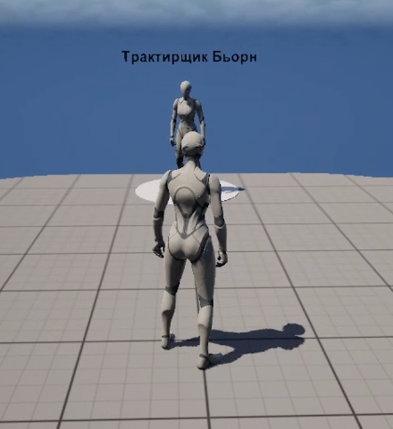
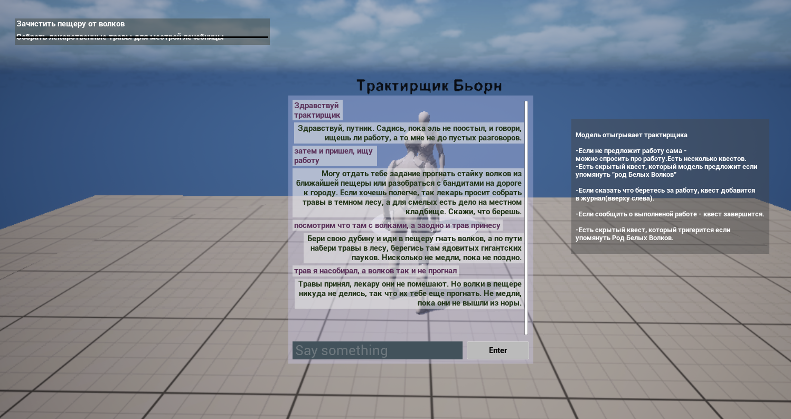
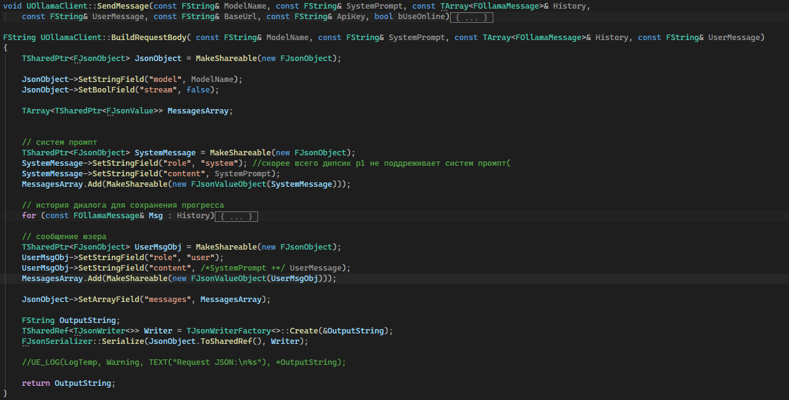
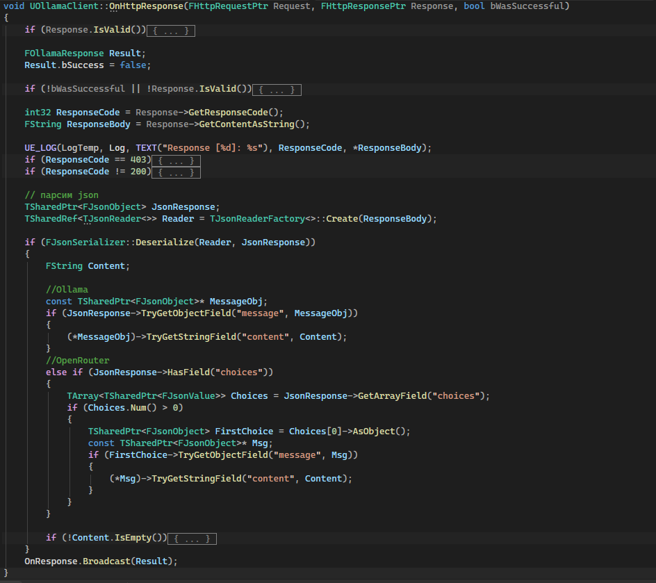
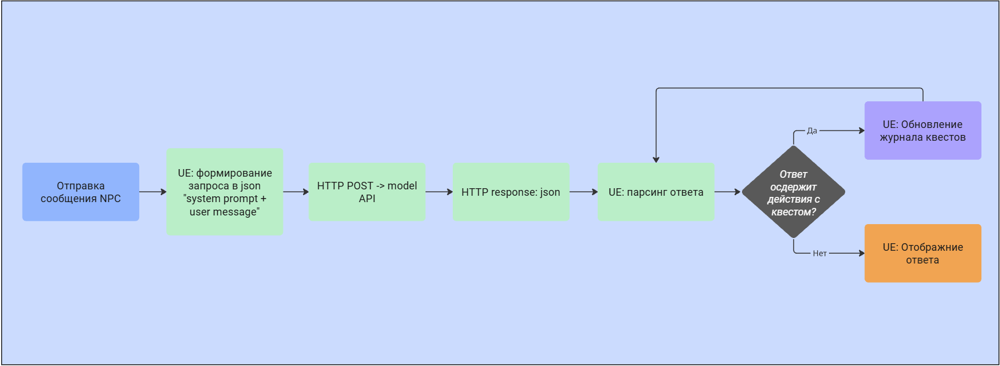
Заключение: Подключение языковой модели в динамическую систему или песочницу - открывает огромные возможности: взять те же квесты - если обьеденить динамическую систему квестов, языковую модель и соответствующий промпт для нее, модель может создавать новые задание доступные из арсенала системы. Каждое прохождение будет сильно отличаться от предыдущего.
Клиент для игры в DnD
Прототип виртуального игрового стола для DnD. В ходе разработки реализованы динамическая загрузка изображений, синхронизация ресурсов между участниками, локальное сохранение состояния партии и восстановление данных при подключении клиентов. Проект не доведён до полноценного игрового продукта; в портфолио представлены реализованные подсистемы и их техническая архитектура.
Ключевой функционал:
- Проект полностью написан на С++. Blueprint использовался только в UI.
- HTTP-сервер для рантайм-загрузки а так же репликации и синхронизации ассетов(изображений)
- Динамическая загрузка карт - изображения загружаются во время игры и реплицируются через HTTP сервер
- Система сохранения/загрузки партий с восстановлением состояния. Рантайм-изображения сохраняются в исходном виде
- Мультиплеер с репликацией на 6 игроков. Система хостинга сессий и поиск доступных игр
- Физические броски кубиков без использования RNG
Статус:«в разработке»
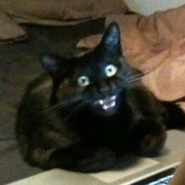
Дополнительная информация
Знаком с: C#, Unity, Python, Lua (Писал моды для Factorio), HTML. Имею опыт full-stack разработки на Python (Flask, SQL), что дало глубокое понимание клиент-серверной архитектуры и проектирования систем с backend-логикой (проект - сайт журнал для учебых заведений).
О себе: в свободное время играю на гитаре, расслабляюсь рисованием на планшете, прослушиваеним музыки, а так же самое главное - обожаю компьютерные игры (больше всего люблю ARPG и всевозможные стратегии).
Как со мной связаться
Вы можете написать мне: